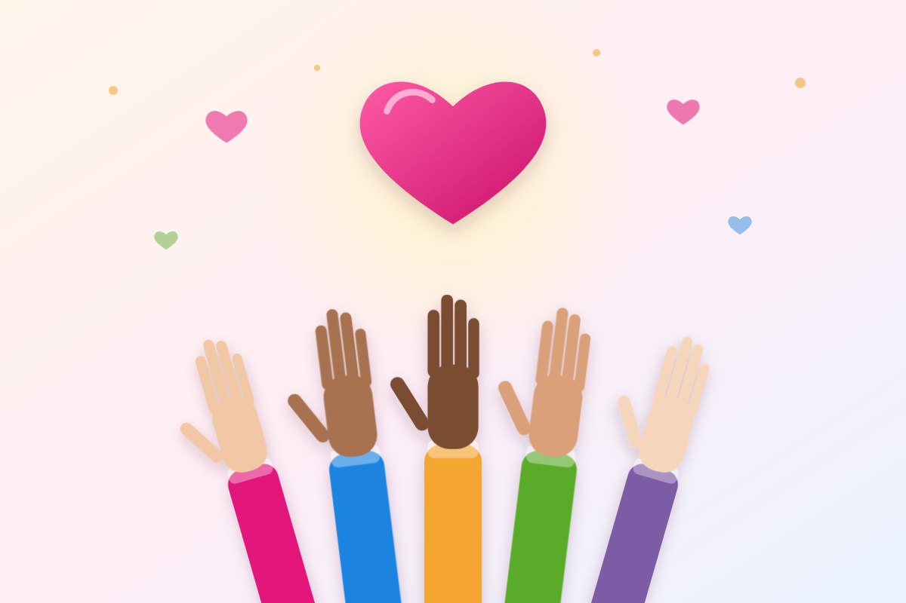

Cidadania
Voluntariado: o que é, benefícios e como começar

Doar algumas horas do seu tempo para ajudar alguém pode mudar uma vida. E, quase sempre, muda também a vida de quem ajuda. O voluntariado é uma das formas mais bonitas de transformar o amor ao próximo em ação.
Nesta matéria você vai entender o que é ser voluntário, quais são os benefícios, os tipos de voluntariado e como dar o primeiro passo.
O que é voluntariado?
Voluntariado é a atividade que uma pessoa realiza por vontade própria, sem receber pagamento, para ajudar outras pessoas, uma comunidade, os animais ou o meio ambiente.
No Brasil, o trabalho voluntário é regulamentado pela Lei nº 9.608/1998. Ela diz que o voluntário não tem vínculo de emprego com a instituição e que os dois assinam um termo de adesão, onde ficam combinadas as atividades. A instituição pode reembolsar despesas que o voluntário tiver, como transporte, desde que estejam previstas.
Por que ser voluntário?
Para quem recebe
- Crianças que ganham reforço escolar, atenção e brincadeiras;
- Idosos que recebem companhia e escuta;
- Famílias que recebem alimento, roupas e orientação;
- Instituições que conseguem atender mais pessoas com os mesmos recursos.
Para quem ajuda
- Sentido e propósito: a sensação de que o seu tempo fez diferença na vida de alguém;
- Bem-estar emocional: ajudar o outro diminui o foco nos próprios problemas e aumenta a gratidão;
- Novas amizades: o voluntariado aproxima pessoas com valores parecidos;
- Aprendizado: você desenvolve empatia, paciência, trabalho em equipe e novas habilidades;
- Experiência: o voluntariado também conta no currículo e mostra iniciativa.
Tipos de voluntariado
- Presencial: atividades na própria instituição, como servir refeições, organizar doações, brincar com crianças ou visitar idosos.
- A distância: ajudar pela internet, com redes sociais, textos, design, aulas online, tradução ou apoio administrativo.
- Pontual: participar de uma campanha ou de um evento específico, como a montagem de cestas básicas ou o Natal solidário.
- Contínuo: assumir uma tarefa regular, por exemplo, algumas horas por semana ou por mês.
- Profissional: oferecer o que você faz no trabalho, como atendimento psicológico, orientação jurídica, contabilidade ou consertos.
Não existe voluntariado "maior" ou "menor". Duas horas por mês, feitas com compromisso, valem muito.
Como começar: passo a passo
- Escolha uma causa que toque você: crianças, idosos, saúde, educação, animais, meio ambiente, pessoas em situação de rua.
- Veja quanto tempo você realmente tem: é melhor prometer pouco e cumprir do que se comprometer demais e desistir.
- Pense no que você sabe fazer: cozinhar, ensinar, organizar, conversar, escrever, dirigir. Tudo pode ser útil.
- Procure uma instituição séria: comece perto de você, no seu bairro, na sua comunidade religiosa ou por indicação de amigos. Também existem plataformas que reúnem vagas, como o Atados e o Centro de Voluntariado de São Paulo (CVSP).
- Converse antes: pergunte como funciona o trabalho, quais são as regras e o que esperam de você.
- Formalize: assine o termo de adesão, como prevê a lei.
Cuidados importantes
- Compromisso: a instituição conta com você. Se não puder ir, avise com antecedência.
- Respeito: ajude sem julgar. Cada pessoa tem a sua história e a sua dignidade.
- Privacidade: não fotografe nem publique imagens de pessoas atendidas, principalmente crianças, sem autorização.
- Siga as orientações: as regras da instituição existem para proteger quem é atendido e quem ajuda.
- Cuide de você também: algumas situações mexem com as emoções. Converse com a equipe e respeite os seus limites.
O voluntariado como caridade em ação
Todas as grandes tradições espirituais ensinam que o amor se prova nas obras. Para a Doutrina Espírita, "fora da caridade não há salvação", e a caridade não está só em doar coisas, mas em doar a si mesmo: tempo, atenção, paciência e carinho.
O voluntariado é exatamente isso: a fé e os bons sentimentos transformados em gestos concretos. E quem serve descobre que recebe muito mais do que dá.
Datas para lembrar
- 28 de agosto: Dia Nacional do Voluntariado.
- 5 de dezembro: Dia Internacional do Voluntário, criado pela ONU.
Seja voluntário com o Instituto AMA
O Instituto AMA apoia e fortalece programas de entidades parceiras e cria novas iniciativas, com foco em educação e apoio ao próximo. Há espaço para quem quer ajudar em campanhas, eventos, atividades educativas e na divulgação do nosso trabalho.
Quer participar? Fale com a gente e conte o que você gosta de fazer e quanto tempo tem disponível. Veja também as nossas campanhas ativas.
Leia também

Reciclagem e descarte correto do lixo: guia prático
Como separar o lixo em casa, o que pode ser reciclado, as cores da coleta seletiva e onde descartar pilhas, óleo e eletrônicos.
Ler matéria
O Hino Nacional Brasileiro: significado, importância e valor cultural
Símbolo da nossa pátria e expressão do nosso povo: a história, o significado da letra e o valor cultural do Hino Nacional.
Ler matéria
Todas as religiões levam ao bem: amor, caridade e evolução
Muitos caminhos, um mesmo princípio: amar o próximo, praticar a caridade e evoluir a cada dia.
Ler matériaGostou desta matéria? Veja outras no blog, conheça nossas referências ou fale com a gente.